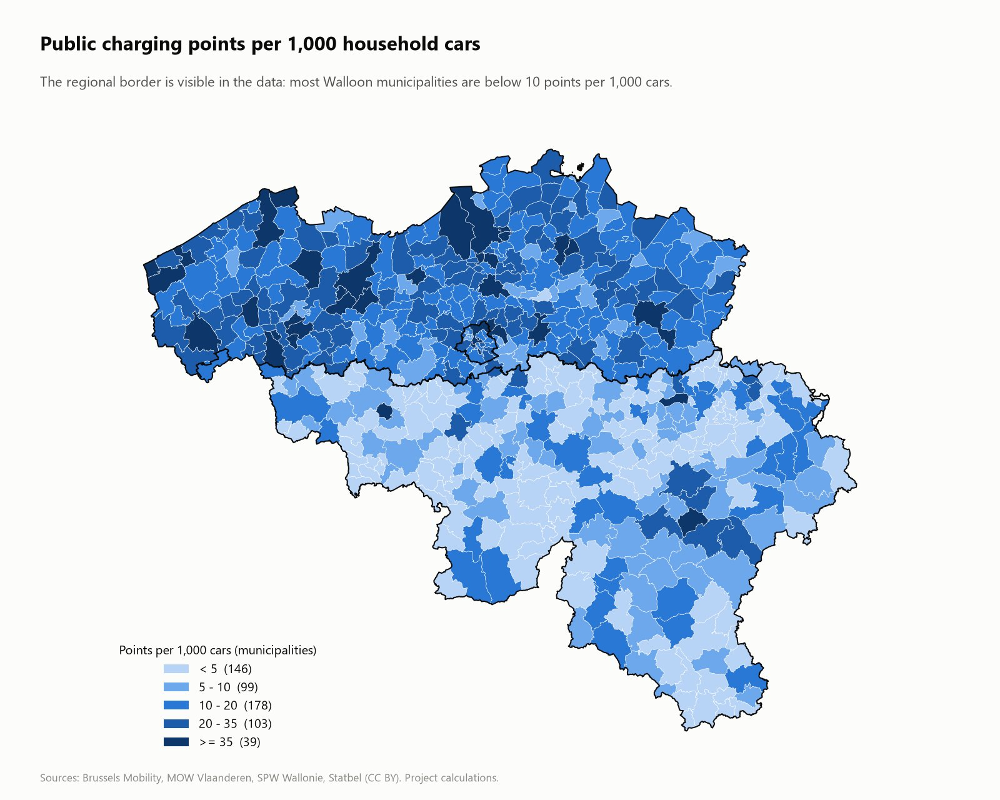
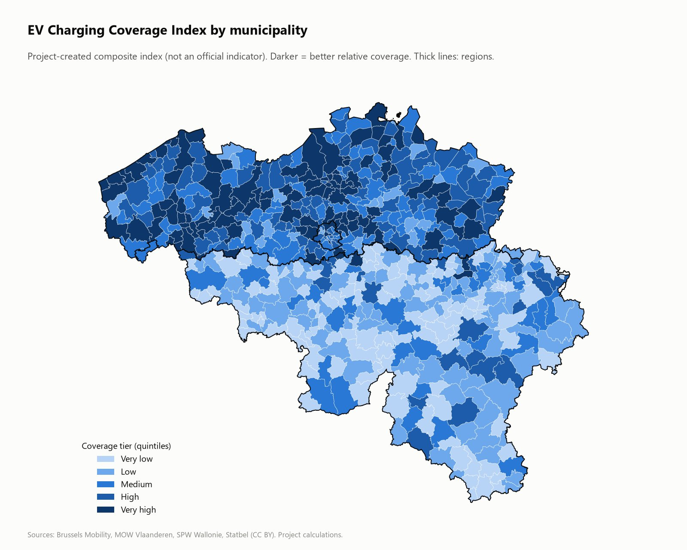
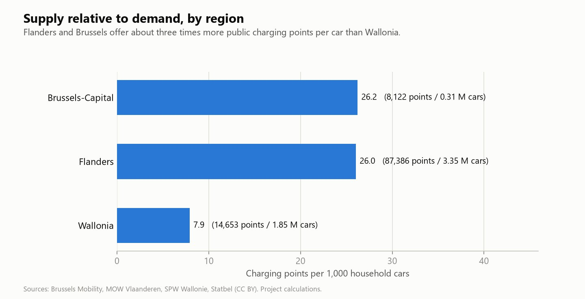
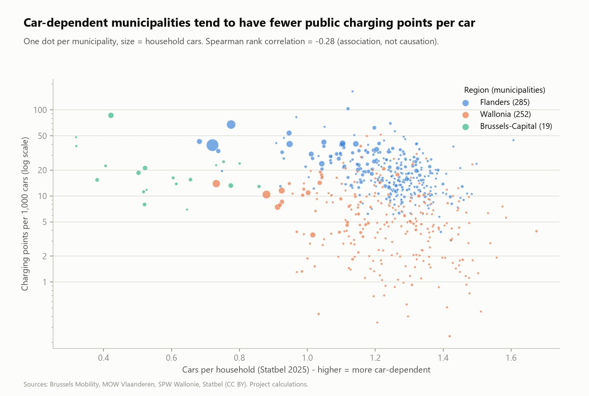
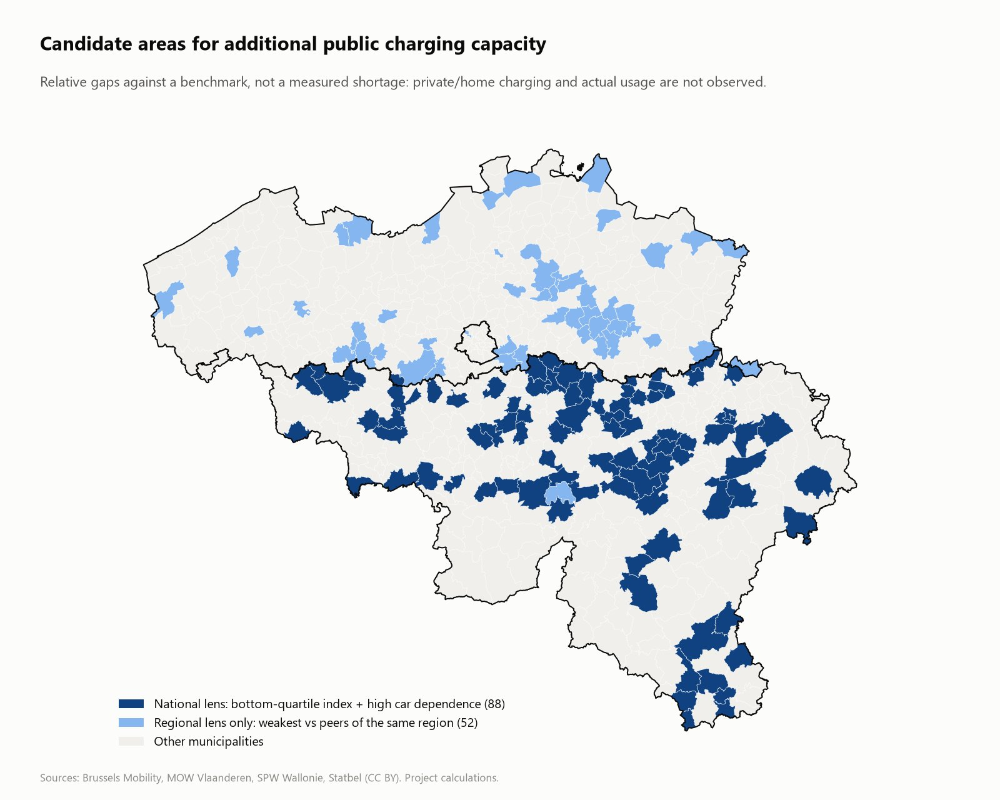
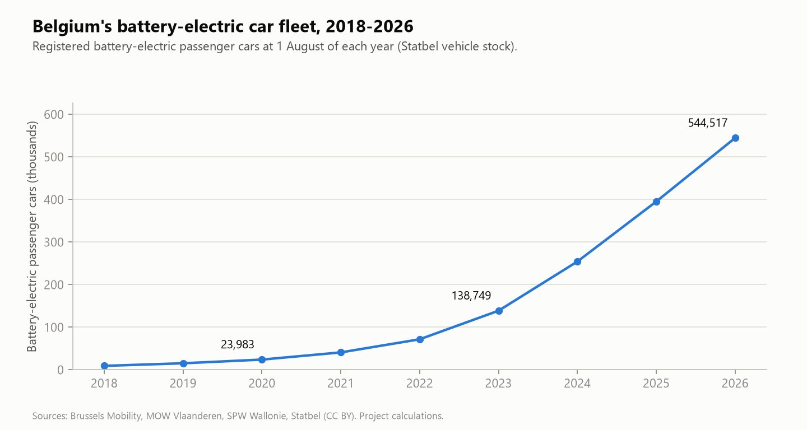
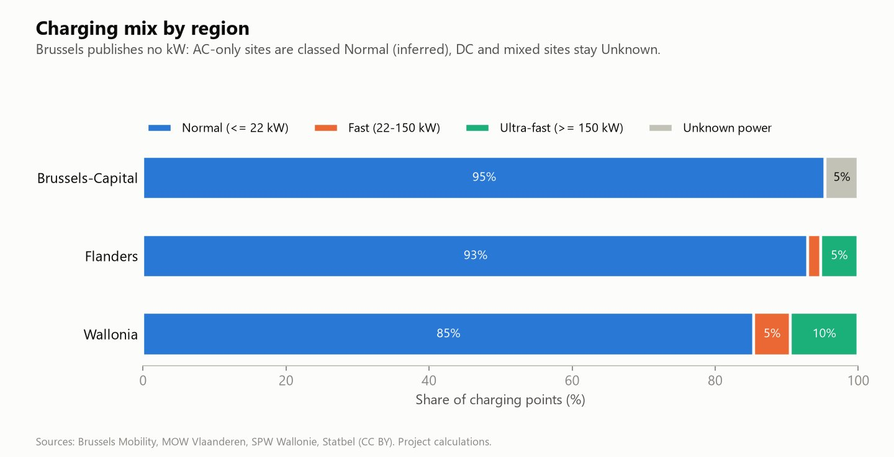

Case study · Geospatial analytics / Open data
Belgian EV Charging Infrastructure Intelligence
Is the charging network keeping pace with the EV transition?
Personal project · official open dataI built a geospatial Data & BI project to find out whether Belgium's charging infrastructure is keeping pace with the EV transition, and to identify potential territorial coverage gaps.
The three-page Power BI report I designed and built: unedited screenshots from Power BI Desktop.
Personal project · official open dataI used no synthetic data: every figure comes from datasets published by Brussels Mobility, MOW Vlaanderen, SPW Wallonie and Statbel. The gaps I show are relative differences between territories, not measured shortages.
PythonpandasGeoPandasSQLSQLitePower BIDAXTMDLpytestGeospatial analysisOpen data
01 · The problem
Three regions. Three datasets. No Belgium-wide view.
Belgium went from 23,983 battery-electric cars in 2020 to 544,517 in 2026.
Charging infrastructure is planned by three regions, and each publishes its own dataset: different language, schema, grain and coordinate system. I found no ready-made answer to the simple question a mobility manager would ask.
Is supply proportional to demand everywhere, and if not, where should we look first?
So I merged the three regional charging datasets with Statbel statistics into one comparable, Belgium-wide model.
02 · My approach
Audit first. Profile next. Let the data decide the model.
Source audit before any analysis
I registered eight official datasets with their publisher, licence, coordinate system and role, and wrote the script that downloads them with checksums.
Profile, then decide the grain
I profiled every file before writing a transformation, and let the data decide the model.
One reproducible pipeline
I wrote the cleaning and normalisation in Python, did the spatial work with GeoPandas, built the model in SQLite and the semantic layer in Power BI. One command rebuilds everything.
Business questions first
I framed seven business questions; they drive my SQL analysis and my three dashboard pages.
Controls before publication
I wrote 54 automated checks and 18 tests: no figure reaches my dashboard without a passing check.
03 · The data
Official sources only. Nothing simulated.
I took supply from the three regional publishers, and potential demand and the spatial layer from Statbel. I simulated nothing: when a value is missing, I leave it missing.
| Source | Publisher | Used for |
|---|---|---|
| EV charging stations | Brussels Mobility | Supply, Brussels (1,752 locations) |
| Public charging points | MOW Vlaanderen | Supply, Flanders (87,381 points) |
| Charging infrastructure | SPW Wallonie | Supply, Wallonia (14,623 points) |
| Cars per household, population (2025) | Statbel | Potential demand |
| Statistical-sector boundaries (2026) | Statbel | Spatial join |
| Vehicle stock (2026) | Statbel | EV transition context |
| Charging needs 2028/2030 | MOW Vlaanderen | Flanders-only benchmark |
Attribution: Brussels Mobility (CC BY), Departement Mobiliteit en Openbare Werken, Service public de Wallonie (CC BY 4.0), Statbel (CC BY 4.0). Charging data are aggregated for the three regions by Eco-Movement.
04 · The stack
I built one pipeline, from the raw official files to Power BI.
- 01Official open dataBrussels Mobility · MOW · SPW · Statbel
- 02PythonScripted download, SHA-256, WFS paging, profiling
- 03Cleaning / normalisationOne schema, one grain rule, de-duplication
- 04GeoPandasEPSG:3812, point-in-polygon on 20,781 Statbel sectors, distances
- 05SQLiteStar schema, views, 23 analytical queries
- 06Controls54 automated checks, 18 tests
- 07Power BIPBIP / TMDL model, 55 DAX measures, 3 pages
- 08Business insightsRegional gap, coverage index, candidate areas
python run_pipeline.py · I chain staging, cleaning, spatial join, model and SQLite, then run my 54 automated checks. With pytest I add 18 tests on the cleaning rules and the database.
pandas · GeoPandas · Shapely · pyproj
CTEs · window functions · views
PBIP / TMDL · DAX · Power Query
18 tests on the cleaning rules and the database
The spatial join is the centre of my model: I joined 103,756 charging records to 20,781 Statbel statistical sectors by point-in-polygon in EPSG:3812, and matched 100% of them.
I re-assigned 81 points to the region they actually lie in. I compute areas and distances in metres, never on degrees.
An extract of my src/geo.py, as it runs in the pipeline.
def join_points_to_sectors(points: gpd.GeoDataFrame, sectors: gpd.GeoDataFrame) -> gpd.GeoDataFrame:
"""Attach the statistical sector to each charging record.
1. point-in-polygon (`within`);
2. for points outside every polygon (coast, border, ~30 m source accuracy): nearest
sector within the configured tolerance;
3. anything further away stays UNMATCHED and is excluded from territorial tables.
"""
cfg = load_config()
metric = cfg["crs"]["metric"]
max_dist = cfg["spatial"]["nearest_sector_max_distance_m"]
assert_crs(points, metric, "charging points before spatial join")
assert_crs(sectors, metric, "sectors before spatial join")
keep = ["statistical_sector_code", "municipality_nis", "region_name", "geometry"]
joined = gpd.sjoin(points, sectors[keep], how="left", predicate="within").drop(columns="index_right")
# A point exactly on a shared edge can match two sectors: keep the first, deterministically.
joined = joined[~joined.index.duplicated(keep="first")]
joined["spatial_join_method"] = "WITHIN"
joined["spatial_join_distance_m"] = 0.0
missing = joined["statistical_sector_code"].isna()
if missing.any():
near = gpd.sjoin_nearest(points.loc[missing], sectors[keep], how="left",
max_distance=max_dist, distance_col="dist")
near = near[~near.index.duplicated(keep="first")]
for col in ("statistical_sector_code", "municipality_nis", "region_name"):
joined.loc[near.index, col] = near[col]
joined.loc[near.index, "spatial_join_distance_m"] = near["dist"]
matched = near["statistical_sector_code"].notna()
joined.loc[near.index[matched], "spatial_join_method"] = f"NEAREST_LE_{max_dist}M"
joined.loc[near.index[~matched], "spatial_join_method"] = "UNMATCHED"
joined.loc[near.index[~matched], "spatial_join_distance_m"] = float("nan")
counts = joined["spatial_join_method"].value_counts().to_dict()
log.info("spatial join: %s", counts)
return joined
05 · The difficulties
Six traps in the real data, and what I decided.
I found every problem below by profiling the files; I assumed none of them in advance.
A silently truncated download.
The Flemish web service returned exactly 20,000 rows. The server actually held 87,381. I rewrote the download with paging and a completeness check: without it, every Flemish figure would have been wrong by a factor of four.
Three grains.
Brussels publishes one row per location, the other regions one row per charging point. Counting rows would have compared 1,752 with 87,381. I kept one row per source record with an additive point count.
A power field that was not power.
Brussels' power column contains voltages (230, 400, 1000), not kW. I left kW empty rather than invent it, and derived a cross-region “fast-capable” flag from AC/DC, validated on Flemish data (99.6% of AC points are at most 22 kW).
Three coordinate systems.
I reproject everything to Belgian Lambert 2008 (metres) before any join or distance.
A site counted twice.
The same 100-point site appeared in two regional files with coordinates 5 km apart. I identified it by location id, operator and size, and removed it once, with an audit trail.
A tempting but wrong denominator.
Registered cars per municipality are distorted by leasing companies (239,830 cars “in” Zaventem). I used Statbel's household-based car counts instead.
06 · The analysis
I compared supply with potential demand, from region to municipality.
- I built a regional scorecard: supply share vs demand share.
- I ranked the municipalities on points per 1,000 household cars, density per km² and fast-charging supply.
- I measured geographic accessibility: the population within 1 km of a charging location.
- I tested car dependence against coverage: do highly motorised municipalities get good coverage?
- I analysed the operator market structure (shares, concentration index).
- I designed and documented an EV Charging Coverage Index (my own composite, not an official indicator), tested its sensitivity and cross-checked it against the official Flemish 2030 needs estimate.
When I write “cars”, I always mean cars owned or used by households: a proxy for potential demand, not a count of electric vehicles.
Opposite: my query q01 in sql/analysis_queries.sql, the regional scorecard.
-- @name: q01_regional_scorecard
-- Is supply proportional to demand? Share of national supply vs share of national cars.
WITH supply AS (
SELECT l.region_name,
SUM(s.charging_point_count) AS charging_points,
COUNT(DISTINCT s.location_uid) AS charging_locations,
SUM(CASE WHEN s.fast_capable = 1 THEN s.charging_point_count END) AS fast_capable_points,
SUM(CASE WHEN s.fast_capable IS NOT NULL THEN s.charging_point_count END) AS classified_points
FROM fact_charging_supply s
JOIN dim_location l ON l.location_key = s.location_key
GROUP BY l.region_name
),
demand AS (
SELECT l.region_name,
SUM(d.population) AS population,
SUM(d.households) AS households,
SUM(d.total_cars) AS total_cars
FROM fact_mobility_demand d
JOIN dim_location l ON l.location_key = d.location_key
GROUP BY l.region_name
),
area AS (
SELECT region_name, SUM(area_km2) AS area_km2 FROM dim_municipality GROUP BY region_name
)
SELECT d.region_name,
d.population,
d.total_cars,
ROUND(1.0 * d.total_cars / d.households, 3) AS cars_per_household,
s.charging_points,
s.charging_locations,
ROUND(1000.0 * s.charging_points / d.total_cars, 2) AS points_per_1000_cars,
ROUND(1000.0 * s.charging_points / d.population, 2) AS points_per_1000_inhabitants,
ROUND(1.0 * d.total_cars / s.charging_points, 1) AS cars_per_point,
ROUND(s.charging_points / a.area_km2, 2) AS points_per_km2,
ROUND(100.0 * s.fast_capable_points / s.classified_points, 1) AS fast_capable_share_pct,
ROUND(100.0 * s.charging_points / SUM(s.charging_points) OVER (), 1) AS share_of_national_points_pct,
ROUND(100.0 * d.total_cars / SUM(d.total_cars) OVER (), 1) AS share_of_national_cars_pct,
ROUND(100.0 * s.charging_points / SUM(s.charging_points) OVER ()
- 100.0 * d.total_cars / SUM(d.total_cars) OVER (), 1) AS supply_minus_demand_share_pts
FROM demand d
JOIN supply s ON s.region_name = d.region_name
JOIN area a ON a.region_name = d.region_name
ORDER BY points_per_1000_cars DESC;
07 · The results
What I found: a sizeable network, very unevenly spread.
What I measure are relative gaps against other territories, not measured shortages. The associations I report are not causal claims.
The national average hides a regional divide.
I count one public point per 4.9 battery-electric cars nationally, but Flanders holds 79% of the points for 61% of household cars, Wallonia 13% for 34%.
The gap in points per car.
I measured 26 points per 1,000 household cars in Flanders and Brussels, and 7.9 in Wallonia.
Reach is Wallonia's first gap.
By my calculation, 66% of Walloon residents live within 1 km of a charging location, against 96% in Flanders and 100% in Brussels. I found nine municipalities without any public point.
Brussels is dense but slow.
I measured 50 points per km² in Brussels, but only 2.6% of them are fast-capable.
Car-dependent municipalities are the least served by public charging.
I measured a rank correlation of -0.28 between cars per household and points per car, and I find it again inside each region.
Candidate municipalities.
I flag 88 candidate municipalities (365,000 household cars) that combine low coverage and high car dependence; my second, within-region lens highlights 98, including 50 in Flanders.
08 · What the results mean
From numbers to answers: what I conclude, and why.
A result is not an explanation. For each finding I state what the data shows, how I read it (a hypothesis, labelled as such, because the data cannot prove it) and what I would do next.
01Is the network keeping pace with the EV transition?
What the data shows
544,517 battery-electric cars in 2026 against 23,983 in 2020, and 110,161 public charging points: one point per 4.9 electric cars.
My reading (hypothesis)
At national level, today's supply is sizeable. But the sources have no installation dates: I can describe the level, not the speed. Whether the network grows as fast as the fleet cannot be said from these files.
What I would do
Save the same snapshot every month. After a year, the growth of the network can be compared with the growth of the fleet.
02Why is Wallonia so far behind per car?
What the data shows
7.9 points per 1,000 household cars in Wallonia, 26 in Flanders and Brussels. Wallonia holds 13% of the points for 34% of the cars.
My reading (hypothesis)
Three hypotheses, none proven here. Density: 219 inhabitants per km² in Wallonia against 504 in Flanders, so a charging site serves fewer people. Housing: more private parking would mean more home charging, which open data do not show. Timing: the Walloon file is six months older than the two others.
What I would do
Start with reach, not volume: the nine municipalities without any public point, then the large fleets with weak ratios such as La Louvière (129 points for 36,623 household cars).
03Why does the thinnest network have the most fast charging?
What the data shows
14.6% of Walloon points are fast-capable against 7.0% in Flanders, yet only 66% of residents live within 1 km of a charging location.
My reading (hypothesis)
Hypothesis: in a low-density territory, operators favour fast sites that passing drivers can use, over slow neighbourhood points that need local density to pay off. The mix is consistent with it; the data cannot confirm the intent.
What I would do
Complement the fast sites with slow, local points where people live: the gap is distance, not speed.
04Brussels is dense but slow: is that a problem?
What the data shows
50 points per km² and every resident within 1 km of a charger, but only 2.6% fast-capable. Households have 0.53 cars on average.
My reading (hypothesis)
Hypothesis: on-street slow charging plays the role that home charging plays elsewhere. If so, the slow mix is a logical choice rather than a weakness. Brussels publishes no kW, so the fast share is inferred from AC/DC.
What I would do
Before adding fast chargers, find out who needs them. That requires usage data, which is not open.
05Why are car-dependent municipalities the least served?
What the data shows
The more cars per household, the fewer public points per car: 24.3 points per 1,000 cars in the least car-dependent third of municipalities, 12.2 in the most car-dependent. Rank correlation -0.28, also inside each region.
My reading (hypothesis)
Hypothesis: public chargers follow dense, mixed land use (centres, shops, offices), while car-dependent municipalities are residential, with private parking where people can charge at home. A low public ratio there may reflect a lower need, not a shortage. An association is not a cause.
What I would do
Cross the list of candidate municipalities with housing and private-charging data before any investment decision.
My answer to the question
Keeping up on average. Not everywhere.
Nationally the supply is real: one public point per 4.9 electric cars. But Belgium does not have one network, it has three. Flanders and Brussels are well supplied per car; Wallonia is not, and its first gap is distance, not speed. The 88 candidate municipalities are where I would look first: leads to check against private charging and local conditions, not proven shortages.
What I would do with more time
- Monthly snapshots, to measure how fast the network grows.
- Distances along the road network instead of straight lines.
- A source on private charging or housing types, to separate real needs from apparent gaps.
- Motorway corridors and through-traffic, which municipal demand ignores.
09 · The dashboard
A three-page Power BI report I built, checked against SQL.
I designed the star schema, wrote the 55 DAX measures and built the three report pages as a Power BI Project (PBIP / TMDL). Each page answers one business question. I then compared 75 measure values with SQL: all match.
- 3report pages
- 55DAX measures
- 75 / 75measure values equal to SQL

On this page I show six headline cards, supply share against demand share, the battery-electric fleet since 2018, my regional scorecard and the charging mix.
I drew a dot map with one bubble per municipality, and added the density per km² by province, the operators by charging points and the municipality detail.
I plot car dependence against my coverage index, show the coverage tiers by region and rank the opportunities. I wrote it on the page itself: candidates to investigate, not proven shortages.
My screenshots are unedited. Power BI Desktop displays numbers in Belgian format (110.161 for 110,161). The Coverage Index on page 3 is a composite I created for this project, not an official indicator.
10 · Analysis outputs
Seven figures I produced with my pipeline.
I produced these seven analysis figures with my Python pipeline (python -m src.figures). They are not Power BI screenshots. Click an image to see it full size.







11 · The limits
What my analysis can claim, and what it cannot.
- Wallonia's file is a six-month-older snapshot than the two others.
- Household cars are a proxy for demand, not EV counts.
- Private and workplace charging, usage and availability are not in open data: a low public ratio is a lead to investigate, not a proven shortage.
- Brussels publishes neither kW nor accessibility.
- My coverage index is relative by construction and is not an official indicator.
12 · What to take away
“The candidate list is a screening tool: it says where to look first, not where a charger is missing.”
Project contents
I wrote the source registry, the download and profiling scripts, the Python pipeline, the SQLite star schema, 23 SQL queries, the tests, the Power BI project (PBIP / TMDL) and the documentation. One command rebuilds everything: python run_pipeline.py.
Next project
Professional experience · Marketing & commercial analytics
ODRES Group
Acquisition, funnel, pipeline and MRR analytics rebuilt publicly with synthetic data: SQL, Python, data quality, Power BI and a budget decision for every campaign.
View case study→